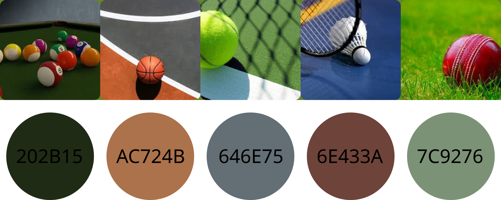

Empathize
Understanding the User’s World
PLAYER:
"I have to call the Tennis Club to reserve a court, but often my calls go unanswered. When they do get back to me, my preferred courts are already booked!"
COACH:
"Is there a way for me to effectively train members in the sport I'm passionate about?"
CLUB EMPLOYEE:
"We constantly receive calls and struggle to track court bookings. Plus, regular players often complain that they can't book their preferred courts."

Define
Crafting the Problem Statement
After engaging in discussions with 6 club members and 2 club managers, we identified key features to enhance the app. These include functionalities like creating a tournament, finding a game partner, and forming game groups within the app.
We recognized that each user would have different levels of access to the app’s features. Based on this, we outlined four distinct personas, each with specific permissions to perform various activities within the app.
These new features aim to enhance user engagement, foster a sense of community, and make it easier for players to connect and organize games.
The four primary personas using the app are as follows:
- Member: A regular club member who can book courts, join tournaments, and connect with other players.
- Non-Member: A guest player who can book courts for a one-time session but has limited access to additional features like tournaments and game groups.
- Admin: Club staff responsible for managing court bookings, tournaments, and ensuring smooth operations within the app.
- Coach: Certified trainers who can organize training sessions, find game partners, and track player progress.
IDEATE – Brainstorming Bold Solutions
During the Ideation phase, I focused on creating low-fidelity mockups for the key screens in the app. The goal was to quickly visualize and refine design ideas before moving into more detailed prototyping. Key activities included:
- Low-Fidelity Mockups: Created basic wireframes to represent the core functionality and user flow.
- User Feedback: Conducted preliminary validation by walking through the mockups with a few users to gather early insights.
- Identify Pain Points: Recognized that the court booking screen required further refinement, as users felt the layout was not intuitive enough.
- Iteration: Based on the feedback, I identified areas for improvement, particularly focusing on simplifying the booking process and enhancing overall usability.
PROTOTYPE – Visualizing the Concept
In the Prototype phase, I moved from low-fidelity wireframes to creating more polished designs in Figma. This was essential for translating the concepts into a usable prototype. Key activities included:
- Main Screen Focus: The main screen, which serves as the user's primary interaction point, was designed with clear focus areas.
- Design Iterations: Tried several design variations based on feedback from users and insights from similar apps.
- Remote Usability Testing: Conducted a remote usability test with 7 users to assess the design’s effectiveness and ease of use. Based on their feedback, the design for the schedule selection page was finalized.
- Refinement: Focused on fine-tuning the layout and interactivity based on real user behavior and preferences.
TEST – Evaluating and Iterating on Ideas
Testing played a crucial role in evaluating the design's impact and identifying areas for further iteration. Activities in this phase included:
- Dark vs Light Mode Testing: Evaluated user preferences for dark and light modes, ensuring that both options were intuitive and aesthetically pleasing.
- User Responses: Gathered feedback on how users responded to the screen modes, with a focus on overall experience and comfort.
- Feature Suggestion: Developers suggested adding a toggle for users to switch between Dark and Light modes, giving users more control over their app experience.

Next Phase – Shaping the Future Based on Insights
As the design evolved, it was important to implement insights gained from user testing. The following steps were taken:
- Design Iteration - 1: Dark vs Light Screen: Based on user feedback, we moved forward with the idea of incorporating Dark and Light modes into the app.
- Accessibility Standards: Realized the need to prioritize accessibility in design. Some users found it difficult to interact with the app due to an overuse of greens and reds, so we made adjustments to improve readability and visual comfort.
- Color Palette Redesign: Redesigned the color palette to meet accessibility standards. The new colors were inspired by tennis balls and court shades, offering a visually pleasant and inclusive experience for all users.
- Improved User Experience: The changes ensured that the app would be accessible to a wider range of users, including those with color vision deficiencies.
DESIGN ITERATION - 4
CHANGE OF COLOR PALETTE
- Implementing Accessibility Standards: At this stage, we decided to prioritize accessibility in the design process.
- User Feedback: During testing, one user mentioned difficulty using the app due to the overuse of greens and reds, which caused visual discomfort.
- Color Palette Redesign: In response to this, I redesigned the color palette to adhere to accessibility standards, ensuring better usability for all users.
- Color Inspiration: The updated palette was inspired by the colors of tennis balls and court shades, providing a visually harmonious experience.
